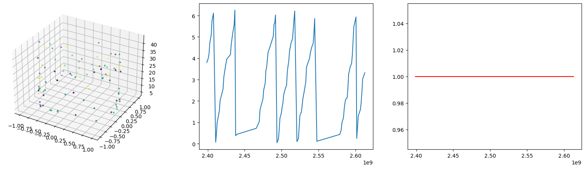

Notebook source code: notebooks/place_cells/24_inspect_results_in_phase_space.ipynb
Post-Training: Inspect Results in Phase Space#
In [ ]:
Setup#
In [1]:
import os
import subprocess
gitroot_path = subprocess.check_output(
["git", "rev-parse", "--show-toplevel"], universal_newlines=True
)
os.chdir(os.path.join(gitroot_path[:-1], "neurometry"))
print("Working directory: ", os.getcwd())
import warnings
warnings.filterwarnings("ignore")
import sys
sys_dir = os.path.dirname(os.getcwd())
sys.path.append(sys_dir)
print("Directory added to path: ", sys_dir)
sys.path.append(os.getcwd())
print("Directory added to path: ", os.getcwd())
Working directory: /Volumes/GoogleDrive/My Drive/code/neurometry/neurometry
Directory added to path: /Volumes/GoogleDrive/My Drive/code/neurometry
Directory added to path: /Volumes/GoogleDrive/My Drive/code/neurometry/neurometry
Imports#
In [2]:
import json
import matplotlib.pyplot as plt
import numpy as np
import torch
import neurometry.datasets.utils as utils
INFO: Using pytorch backend
Choose an experiment and its config#
In [3]:
CONFIG_DIR = os.path.join(os.getcwd(), "results", "configs")
print(f"Config in directory: {CONFIG_DIR}:")
for config_file in os.listdir(CONFIG_DIR):
print(config_file)
Config in directory: /Volumes/GoogleDrive/My Drive/code/neurometry/neurometry/results/configs:
2022-12-30 14:51:00_s1_synthetic_run_f6lf1kqb.json
2022-12-30 14:51:00_s1_synthetic_run_moqyd9pq.json
2022-12-30 14:51:00_s1_synthetic_run_zpuaxz74.json
2022-12-30 14:51:00_s1_synthetic_run_9as5jt1n.json
2022-12-30 14:51:00_s1_synthetic_run_pnxol6cm.json
2022-12-30 14:51:00_s1_synthetic_run_yqj4d821.json
2022-12-30 14:51:00_s1_synthetic_run_t6esqyz7.json
2022-12-30 14:51:00_s1_synthetic_run_exe5ao7e.json
2022-12-30 14:51:00_s1_synthetic_run_7161z7gq.json
2022-12-30 14:51:00_s1_synthetic_run_rig5rbxv.json
2022-12-30 14:51:00_experimental_41_gain_1_run_nnl6pw1z.json
2022-12-30 14:51:00_experimental_41_gain_1_run_u91lhsuk.json
2022-12-30 14:51:00_experimental_41_gain_1_run_k1q4zzp7.json
2022-12-30 14:51:00_experimental_41_gain_1_run_nxnsx6xb.json
2022-12-30 14:51:00_experimental_41_gain_1_run_ntjvi3kj.json
In [4]:
with open(
os.path.join(
CONFIG_DIR, "2022-12-30 14:51:00_experimental_41_gain_1_run_ntjvi3kj.json"
),
) as f:
config_dict = json.load(f)
# Convert a dict into an object where attributes are accessed with "."
# This is needed for the utils.load() function
class AttrDict(dict):
def __init__(self, *args, **kwargs):
super().__init__(*args, **kwargs)
self.__dict__ = self
config = AttrDict(config_dict)
config
Out [4]:
{'batch_size': 50,
'decoder_depth': 3,
'decoder_width': 4,
'encoder_depth': 4,
'encoder_width': 6,
'lr': 0.0909932979491224,
'dataset_name': 'experimental',
'sweep_name': '2022-12-30 14:51:00_experimental_41_gain_1_sweep_4pg4beyj',
'expt_id': '41',
'timestep_microsec': 1000000,
'smooth': True,
'select_gain_1': True,
'n_times': None,
'embedding_dim': None,
'distortion_amp': None,
'noise_var': None,
'manifold_dim': 1,
'latent_dim': 2,
'posterior_type': 'hyperspherical',
'distortion_func': None,
'n_wiggles': None,
'radius': None,
'major_radius': None,
'minor_radius': None,
'synthetic_rotation': None,
'device': 'cpu',
'log_interval': 20,
'checkpt_interval': 20,
'scheduler': False,
'n_epochs': 2,
'beta': 0.03,
'gamma': 20,
'sftbeta': 4.5,
'gen_likelihood_type': 'gaussian',
'gain': 1,
'run_name': '2022-12-30 14:51:00_experimental_41_gain_1_run_ntjvi3kj',
'results_prefix': '2022-12-30 14:51:00_experimental_41_gain_1_run_ntjvi3kj',
'data_n_times': 99,
'data_dim': 12}
Inspect input dataset#
In [5]:
dataset_torch, labels, train_loader, test_loader = utils.load(config)
thetas = np.array(labels["angles"])
sort = np.argsort(thetas)
sorted_thetas = thetas[sort]
dataset = dataset_torch.detach().numpy()
sorted_dataset = dataset[sort, :]
times = labels["times"]
velocities = labels["velocities"]
gains = labels["gains"]
angles = np.radians(labels["angles"])
x = np.cos(angles)
y = np.sin(angles)
fig = plt.figure(figsize=(20, 5))
cyl = fig.add_subplot(1, 3, 1, projection="3d")
cyl.scatter3D(x, y, velocities, s=5, c=times)
prof = fig.add_subplot(1, 3, 2)
gain = fig.add_subplot(1, 3, 3)
prof.plot(times, angles)
gain.plot(times, gains, color="red");
INFO: # - Found file at data/binned/expt41_times_timestep1000000.txt! Loading...
INFO: # - Found file at data/binned/expt41_place_cells_timestep1000000.npy! Loading...
INFO: # - Found file at data/binned/expt41_labels_timestep1000000.txt! Loading...
Unnamed: 0 times angles velocities gains
0 0 2.398831e+09 218.096356 14.498892 1.000
1 1 2.399831e+09 228.319574 1.598267 1.000
2 2 2.400831e+09 229.646926 6.372364 1.000
3 3 2.401831e+09 241.624300 17.123473 1.000
4 4 2.402831e+09 269.453404 32.549442 1.000
... ... ... ... ... ...
3877 3877 6.275831e+09 153.349456 23.023874 1.769
3878 3878 6.276831e+09 180.073147 32.645234 1.769
3879 3879 6.277831e+09 212.383674 20.877510 1.769
3880 3880 6.278831e+09 218.709534 1.998074 1.769
3881 3881 6.279831e+09 228.125413 16.185864 1.769
[3882 rows x 5 columns]
The dataset transitions between two gains: 1.769000 and 1.000000.
We select gain 1: gain = 1.
Dataset shape: (99, 12).

In [6]:
fig = plt.figure()
ax = fig.add_subplot(111, projection="3d")
T = 30
ax.plot3D(x[0:T], y[0:T], velocities[0:T])
ax.scatter3D(x[0:T], y[0:T], velocities[0:T], c=times[0:T])
# ax.plot3D(x, y, velocities)
# ax.scatter3D(x, y, velocities, c = times)
Out [6]:
<mpl_toolkits.mplot3d.art3d.Path3DCollection at 0x7fd748fd0ca0>

In [7]:
dataset_torch.shape
Out [7]:
torch.Size([99, 12])
Inspect from reconstruction#
In [8]:
TRAINED_MODELS = os.path.join(os.getcwd(), "results/trained_models")
print(f"Available trained models in directory: {TRAINED_MODELS}")
for model_path in os.listdir(TRAINED_MODELS):
print("-", model_path)
Available trained models in directory: /Volumes/GoogleDrive/My Drive/code/neurometry/neurometry/results/trained_models
- 2022-12-30 14:51:00_s1_synthetic_run_f6lf1kqb_model.pt
- 2022-12-30 14:51:00_s1_synthetic_run_moqyd9pq_model.pt
- 2022-12-30 14:51:00_s1_synthetic_run_zpuaxz74_model.pt
- 2022-12-30 14:51:00_s1_synthetic_run_9as5jt1n_model.pt
- 2022-12-30 14:51:00_s1_synthetic_run_pnxol6cm_model.pt
- 2022-12-30 14:51:00_s1_synthetic_run_yqj4d821_model.pt
- 2022-12-30 14:51:00_s1_synthetic_run_t6esqyz7_model.pt
- 2022-12-30 14:51:00_s1_synthetic_run_exe5ao7e_model.pt
- 2022-12-30 14:51:00_s1_synthetic_run_7161z7gq_model.pt
- 2022-12-30 14:51:00_s1_synthetic_run_rig5rbxv_model.pt
- 2022-12-30 14:51:00_experimental_41_gain_1_run_nnl6pw1z_model.pt
- 2022-12-30 14:51:00_experimental_41_gain_1_run_u91lhsuk_model.pt
- 2022-12-30 14:51:00_experimental_41_gain_1_run_k1q4zzp7_model.pt
- 2022-12-30 14:51:00_experimental_41_gain_1_run_nxnsx6xb_model.pt
- 2022-12-30 14:51:00_experimental_41_gain_1_run_ntjvi3kj_model.pt
In [9]:
# Select a model that matches the config above
filename = os.path.join(
TRAINED_MODELS, "2022-12-30 14:51:00_experimental_41_gain_1_run_ntjvi3kj_model.pt"
)
model = torch.load(filename)
In [10]:
z, _, _ = model(dataset_torch.to(config.device))
In [11]:
thetas = (torch.atan2(z[:, 1], z[:, 0]) + 2 * torch.pi) % (2 * torch.pi)
thetas = thetas.cpu().detach().cpu().numpy()
print(len(times))
print(len(thetas))
99
99
In [12]:
t1 = 10 # 1800
t2 = 80 # 1900
plt.plot(times[t1:t2], angles[t1:t2])
plt.plot(times[t1:t2], thetas[t1:t2]);

In [13]:
fig = plt.figure(figsize=(20, 10))
ax_true = fig.add_subplot(121, projection="3d")
ax_h = fig.add_subplot(122, projection="3d")
ax_true.plot3D(x[t1:t2], y[t1:t2], velocities[t1:t2])
ax_h.plot3D(np.cos(thetas)[t1:t2], np.sin(thetas)[t1:t2], velocities[t1:t2])
ax_true.scatter3D(x[t1:t2], y[t1:t2], velocities[t1:t2], c=times[t1:t2])
ax_h.scatter3D(
np.cos(thetas)[t1:t2], np.sin(thetas)[t1:t2], velocities[t1:t2], c=times[t1:t2]
)
Out [13]:
<mpl_toolkits.mplot3d.art3d.Path3DCollection at 0x7fd7490cf850>

In [14]:
a = np.cumsum(angles)
th = np.cumsum(thetas)
In [15]:
plt.plot(a);

In [16]:
plt.plot(velocities)
Out [16]:
[<matplotlib.lines.Line2D at 0x7fd700655040>]

In [17]:
a
Out [17]:
0 3.806499
2 7.814594
3 12.031734
4 16.734583
6 21.839310
...
208 282.131525
209 284.070198
210 286.492234
211 289.531074
214 292.852503
Name: angles, Length: 99, dtype: float64
In [ ]: